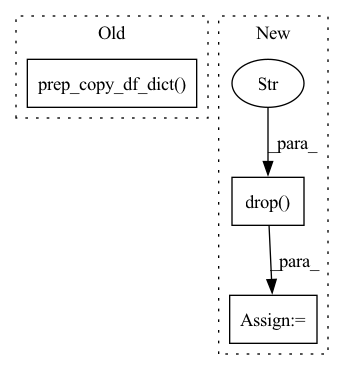

Pattern ID :25274

Before Change
df_train, df_val = df_utils.split_df(df_in, n_lags, n_forecasts, valid_p)
// create a tabularized dataset from time series
df = df_utils.check_dataframe(df_train)
df_dict, _ = df_utils.prep_copy_df_dict(df)
local_data_params, global_data_params = df_utils.init_data_params(df_dict=df_dict, normalize="minmax")
df = df_utils.normalize(df, global_data_params)
inputs, targets, _ = time_dataset.tabularize_univariate_datetime(
df, n_lags=n_lags, n_forecasts=n_forecasts, config_missing=config_missing
After Change
// create a tabularized dataset from time series
df = df_utils.check_dataframe(df_train)
local_data_params, global_data_params = df_utils.init_data_params(df=df, normalize="minmax")
df = df.drop("ID", axis=1)
df = df_utils.normalize(df, global_data_params)
inputs, targets, _ = time_dataset.tabularize_univariate_datetime(
df, n_lags=n_lags, n_forecasts=n_forecasts, config_missing=config_missing
)
In pattern: SUPERPATTERN
Frequency: 3
Non-data size: 3
Instances
Fragment ID: 77194393
Project Name: ourownstory/neural_prophet
Commit Name: 7fcf23557cb5b30885a8a07387d411c61a50a05e
Time: 2022-06-21
Author: mgheorghecr@gmail.com
File Name: tests/test_unit.py
M Class Name: AnonimousClass
N Class Name: AnonimousClass
M Method Name: test_time_dataset(0)
N Method Name: test_time_dataset(0)
M Parent Class:
N Parent Class:
M File Name: tests/test_unit.py
N File Name: tests/test_unit.py
M Start Line: 81
M End Line: 82
N Start Line: 81
N End Line: 83
'>
Before Change
)
// with config
m.config_normalization.init_data_params(
df_utils.prep_copy_df_dict(df)[0], m.config_covar, m.regressors_config, m.events_config
)
df_norm = m._normalize(df_utils.prep_copy_df_dict(df)[0])
m.config_normalization.unknown_data_normalization = True
After Change
df_norm = m._normalize(df)
m.config_normalization.unknown_data_normalization = False
// using config for utils
df = df.drop("ID", axis=1)
df_norm = df_utils.normalize(df, m.config_normalization.global_data_params)
df_norm = df_utils.normalize(df, m.config_normalization.local_data_params["__df__"])
// with utils
'>
Fragment ID: 77194395
Project Name: ourownstory/neural_prophet
Commit Name: 7fcf23557cb5b30885a8a07387d411c61a50a05e
Time: 2022-06-21
Author: mgheorghecr@gmail.com
File Name: tests/test_unit.py
M Class Name: AnonimousClass
N Class Name: AnonimousClass
M Method Name: test_normalize(0)
N Method Name: test_normalize(0)
M Parent Class:
N Parent Class:
M File Name: tests/test_unit.py
N File Name: tests/test_unit.py
M Start Line: 101
M End Line: 132
N Start Line: 102
N End Line: 130
'>
Before Change
rolling=config_missing.impute_rolling,
)
df = df_utils.check_dataframe(df)
df_dict, _ = df_utils.prep_copy_df_dict(df)
local_data_params, global_data_params = df_utils.init_data_params(df_dict=df_dict, normalize="minmax")
df = df_utils.normalize(df, global_data_params)
// Check if ValueError is thrown, if NaN values remain after auto-imputing
with pytest.raises(ValueError):
After Change
)
df = df_utils.check_dataframe(df)
local_data_params, global_data_params = df_utils.init_data_params(df=df, normalize="minmax")
df = df.drop("ID", axis=1)
df = df_utils.normalize(df, global_data_params)
df["ID"] = "__df__"
// Check if ValueError is thrown, if NaN values remain after auto-imputing
with pytest.raises(ValueError):
'>
Fragment ID: 77194397
Project Name: ourownstory/neural_prophet
Commit Name: 7fcf23557cb5b30885a8a07387d411c61a50a05e
Time: 2022-06-21
Author: mgheorghecr@gmail.com
File Name: tests/test_unit.py
M Class Name: AnonimousClass
N Class Name: AnonimousClass
M Method Name: test_too_many_NaN(0)
N Method Name: test_too_many_NaN(0)
M Parent Class:
N Parent Class:
M File Name: tests/test_unit.py
N File Name: tests/test_unit.py
M Start Line: 757
M End Line: 758
N Start Line: 813
N End Line: 817